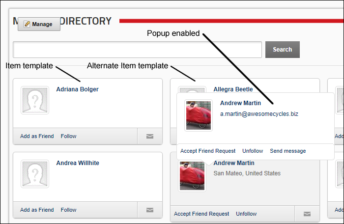
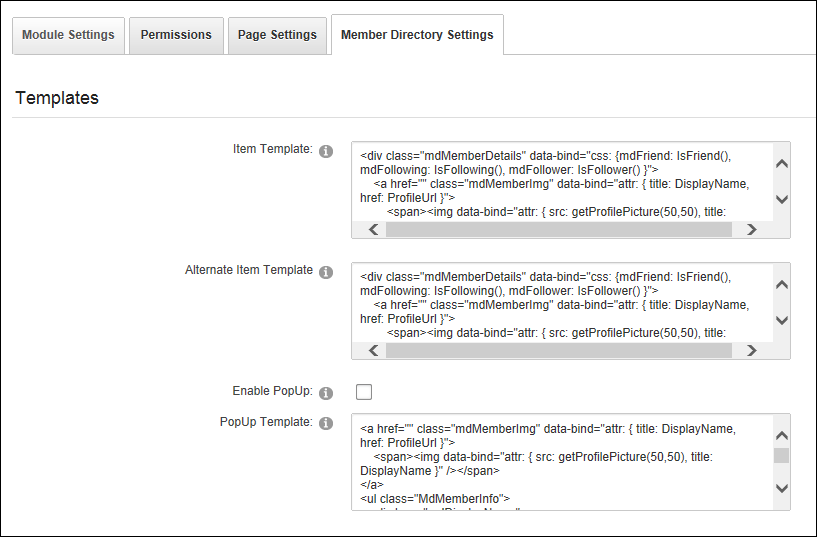

Managing Templates
The layout of the Member Directory module can be changed using the templates maintained on the Member Directory Settings page. In the below image the default templates that are provided with DNN are used.

Here's how to configure the Member Directory templates:
-
- Select the Member Directory Settings tab.
- Expand the Templates section.
- In the Item Template text box, edit the template for member listings.
- In the Alternative Item Template text box, edit the template for alternate member listings or leave this field blank to use the same layout for all members.
- At Enable PopUp, select from these options:
- to display member details in a popup window when a user mouses over a member's listing.
- to disable popup window.
- In the PopUp Template text box, edit the template used for the PopUp window.

-